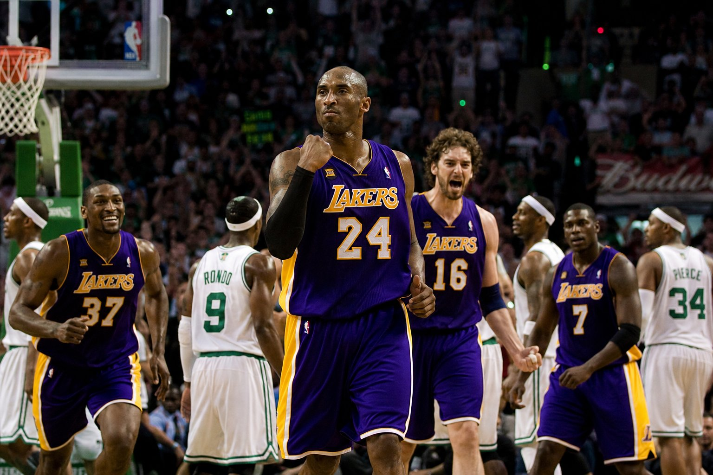
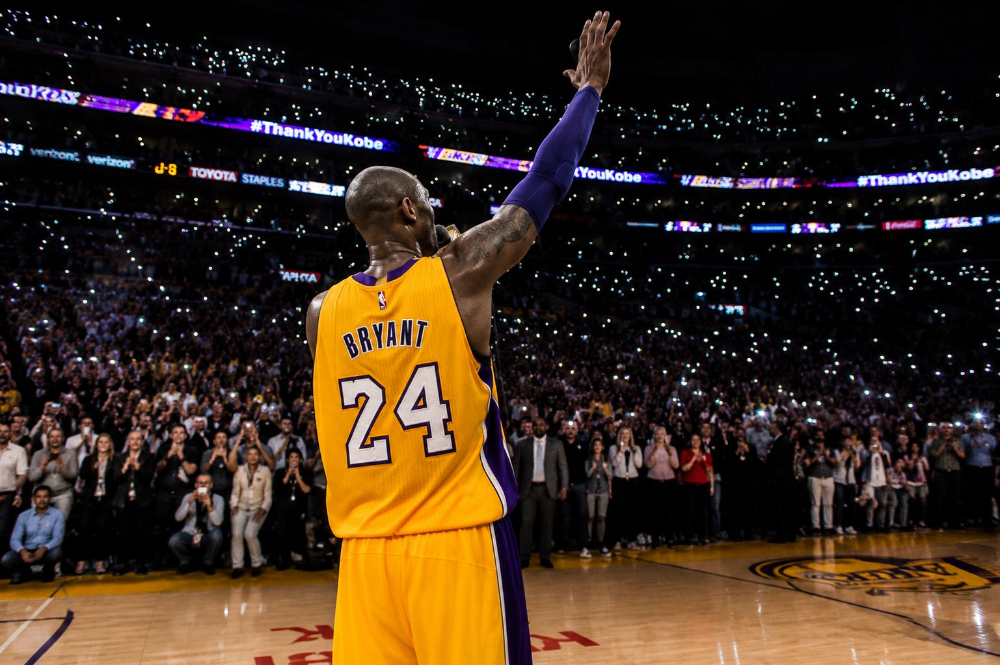

Academy Award
Won the 2018 Oscar for Best Animated Short Film for Dear Basketball. First former professional athlete to win an Academy Award.
The Black Mamba
Twenty years. Five championships.
One obsession with greatness.

Kobe Bryant entered the NBA straight from high school at 17 years old. Most expected him to struggle. He spent the next twenty years proving that greatness is never given — only earned, rep by rep, before the sun rose.
His obsession with mastery — 4 AM workouts, frame-by-frame film study, practicing the same post move 500 times until it was involuntary — redefined what greatness could look like.
The Mamba Mentality wasn't a brand. It was a philosophy lived at the highest possible intensity, every single day, for two decades straight.
Read his full story



Selected by Charlotte, traded to the Lakers. At 17 — youngest NBA player since 1975. His coach said he already saw the game three passes ahead.
Won the NBA Slam Dunk Contest at 18 — the youngest winner ever. The league was beginning to understand what they were watching.
Named All-Star starter at 19 — the youngest in NBA history, a record that still stands. He scored 18 points in 22 minutes.
Led the Lakers to the first of three consecutive NBA titles with Shaquille O'Neal. A dynasty was born. Kobe was 21 years old.
Third consecutive championship. After an iconic comeback vs Sacramento, the Lakers claimed their third straight ring. Kobe was 23.
January 22. Toronto Raptors. 81 points — 55 in the second half alone. The second-highest total in NBA history. Forever.
Named NBA's MVP averaging 28.3 PPG. Led Team USA's "Redeem Team" to gold in Beijing. The arguments were settled.
Boston Celtics. Game 7. The most important game of his life. He won it. Five rings. Two Finals MVPs. The case was closed.
His last game. 60 points at 37 years old. The arena lit like a galaxy. "Mamba out." Two words. Twenty years. Eternal.
Won the Oscar for Best Animated Short Film for Dear Basketball. First former professional athlete to win an Academy Award.
Inducted posthumously. The ovation lasted four minutes and twenty-four seconds. His name lives in that building forever.
Not a mindset. Not a brand. A way of life — four pillars that built the most relentless competitor the game has ever seen.
4 AM gym sessions before anyone else arrived. Christmas mornings on the free-throw line. The work never stopped because the obsession never did.
Ruptured Achilles. Broken fingers. Collapses and comebacks. Every obstacle became fuel. Pressure didn't break him — it built him stronger.
He didn't just play basketball — he studied it like a dissertation. Every opponent's tendency. Every angle off the glass. Nothing left to chance.
Every possession was the most important thing on the planet. Every moment was an opportunity. Nothing throwaway. Nothing casual. Ever.


Won the 2018 Oscar for Best Animated Short Film for Dear Basketball. First former professional athlete to win an Academy Award.
His bestselling book on obsession and performance — translated into 22 languages. Still outselling most active athletes' memoirs years after publication.
Built to empower youth athletes, especially young women in basketball. Vanessa Bryant leads the mission every single day.
From Philadelphia to Manila, Lagos to São Paulo — jersey #24 is still worn with reverence. His philosophy became a universal language of ambition.

"Kobe was a legend on the court and was just getting started in what would have been just as meaningful a second act."
"I am absolutely devastated by the news of Kobe's and Gianna's passing. Words can't describe the pain I'm feeling. We love you."
"There will never be another Kobe Bryant. The determination, the excellence, the legacy he left behind is something I hope we never forget."
"Kobe was one of the greatest athletes of our time — dedicated, determined, relentless. The Mamba Mentality lives on in all of us."
Explore the full biography, discover his living legacy, and connect with the community.